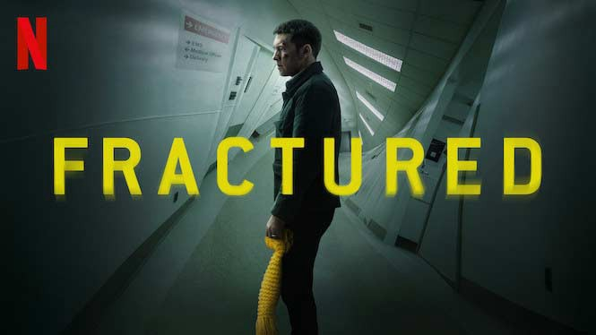
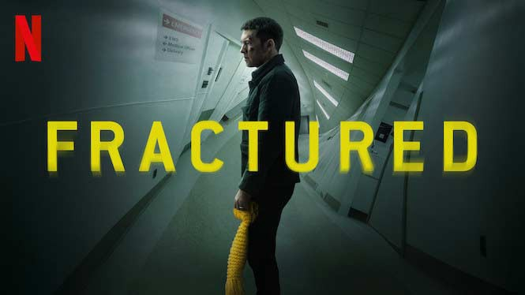
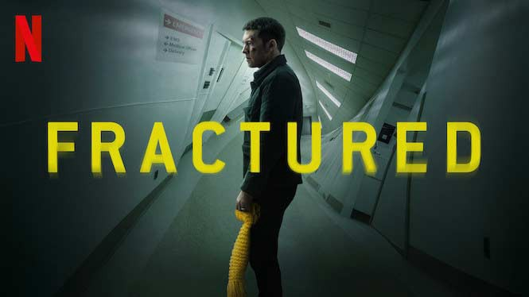

 Project
Project
the first movie I will be writing about is the movie fractured, an American psychological thriller film directed by Brad Anderson. The movie is about a man who gets into an accident with his wife and young daughter. after he bring them to a nearby hospital, weird things start to happen and he beings to think the hospital kidnapped his wife and daughter, or did they? In this movie, you have to make the decison on who you agree with, the main character or the what the hospital is telling him.
